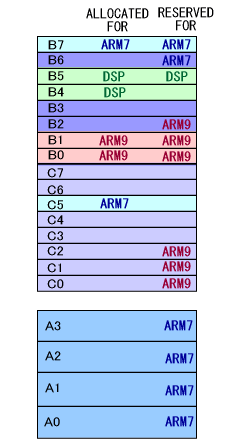

#include <twl/mi.h>u8 MI_GetAllocatableWramSlot( MIWramPos wram, MIWramProc proc );(define)#define MI_GetAllocatableWramSlot_A( MIWramProc proc );#define MI_GetAllocatableWramSlot_B( MIWramProc proc );#define MI_GetAllocatableWramSlot_C( MIWramProc proc );| wram | 情報を取得するWRAM |
| proc | プロセッサ。このプロセッサへの割り当てが可能なWRAMバンクを取得します。 MI_WRAM_ARM9, MI_WRAM_ARM7, MI_WRAM_DSP のいずれかを指定します。 |
指定のWRAMの中で、指定のプロセッサが割り当て可能なWRAMスロットの情報を返します。WRAM-A に対してはスロット0〜3、WRAM-B と WRAM-C に対してはスロット0〜7 の情報が返ります。
指定のWRAMに対し、指定のプロセッサへの割り当てが可能なスロットの情報を取得します。
割り当て可能なスロット
割り当て可能なスロットとは、
・ そのスロットがどのプロセッサにも割り当てられていない。
・ そのスロットがどのプロセッサにも予約されていないか、指定のプロセッサ用に予約されている。
の両方の条件を満たすものです。
返り値について
u8 値の下位ビットより順に スロット0, スロット1,... を表しており、ビットが1となっているスロットは取得可能という意味です。
例えば、MI_GetAllocatableWramSlot( MI_WRAM_B, MI_WRAM_ARM9 ) の返り値が 0xC0 ( 2進数で 11000000 )だった場合、WRAM-B のスロット 0,1,2,3,4,5 は ARM9
への割り当てが不可能である (すでに他のプロセッサが割り当てられているか、他のプロセッサ用に予約されている)
ことを表し、スロット 6,7 はARM9 への割り当てが可能であることを表します。
プロセッサに MI_WRAM_FREE を指定した場合
proc には MI_WRAM_ARM9, MI_WRAM_ARM7, MI_WRAM_DSP を指定して、そのプロセッサのために確保できるWRAMスロットを調べますが、特殊な使い方として MI_WRAM_FREE を指定することができます。
MI_WRAM_FREE を指定すると、どこにも予約されていなく、どこからも確保されていない完全にフリーなWRAMスロットの情報を取得することが出来ますが、この用途のために MI_GetFreeWramSlot() という別関数を用意していますので、そちらを使用することを推奨します。
例

上記の状態では以下のようになります。
MI_GetAllocatableWramSlot( MI_WRAM_B, MI_WRAM_ARM9 )→ 0x0C
MI_GetAllocatableWramSlot( MI_WRAM_B, MI_WRAM_ARM7 )→ 0x48
MI_GetAllocatableWramSlot( MI_WRAM_B, MI_WRAM_DSP )→ 0x08
MI_GetAllocatableWramSlot( MI_WRAM_C, MI_WRAM_ARM9 )→ 0xDF
MI_GetAllocatableWramSlot( MI_WRAM_C, MI_WRAM_ARM7 )→ 0xD8
MI_GetAllocatableWramSlot( MI_WRAM_C, MI_WRAM_DSP )→ 0xD8
MI_GetAllocatableWramSlot( MI_WRAM_A, MI_WRAM_ARM9 )→ 0x00
MI_GetAllocatableWramSlot( MI_WRAM_A, MI_WRAM_ARM7 )→ 0x0F
MI_GetAllocatableWramSlot( MI_WRAM_A, MI_WRAM_DSP )→ 0x00
WRAM種類を関数名に含めた便利関数
MI_GetAllocatableWramSlot_A(...) は MI_GetAllocatableWramSlot( MI_WRAM_A, ... ) の define です。
MI_GetAllocatableWramSlot_B(...) は MI_GetAllocatableWramSlot( MI_WRAM_B, ... ) の define です。
MI_GetAllocatableWramSlot_C(...) は MI_GetAllocatableWramSlot( MI_WRAM_C, ... ) の define です。
ARM9が管理している WRAMマネージャが返り値を決定します。
ARM7からは PXI を通して ARM9 から値を取得します。
概要(ワークRAM)、MI関連の定数
MI_GetFreeWramSlot, MI_GetUsedWramSlot
2008/05/29 初版